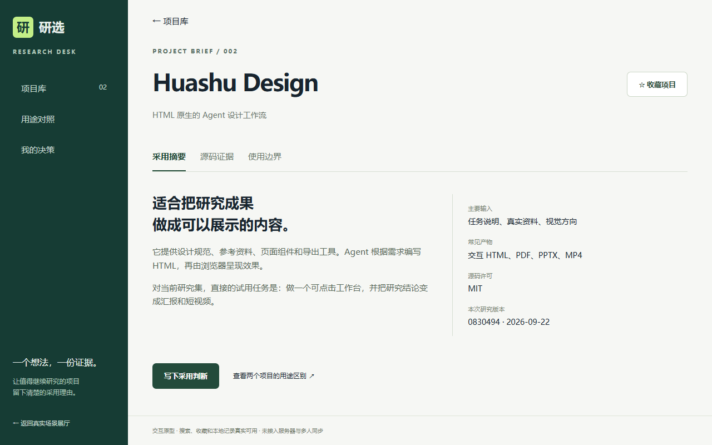
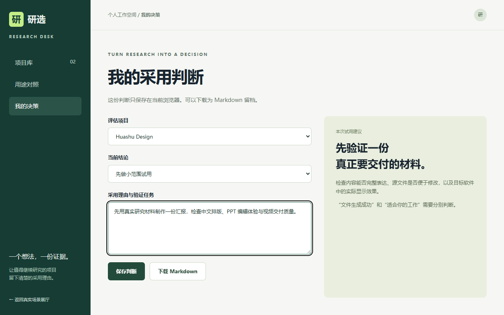

研选
开源项目研究与选型工作台
一份概念方案 · 用真实项目检验研究流程
RESEARCH DESK
方案评审 / 2026.09
01 / 06
研究过程中，最容易丢失的是采用理由
场景假设：研究者收集了多个仓库，希望判断下一步先试哪一个。
资料散落
看过 README，
却没有留下版本与来源。
边界混淆
样例看起来可用，
实际任务还缺哪些环节？
结论缺位
收藏了项目，
没有具体试用任务。
工作台的设计目标：让每份结论都能找到证据和下一步。
02 / 06
项目库
先按用途找项目
搜索“设计”，
定位视觉交付工具。
Huashu Design 与 witr
解决不同问题，
不做跨用途的总分排名。

03 / 06
证据页
把能力与边界一起看
每项关键判断
都有固定版本的来源。
原型、导出与云服务
分别记录验证状态。

04 / 06
采用判断
研究结束后，留下行动
写下一个试用任务，
说明为什么值得继续。
本地保存便于回看，
Markdown 便于归档。

05 / 06
首轮试用范围
先完成一个真实项目的研究闭环
本轮可体验
项目筛选与详情查看
固定版本的证据链接
收藏、本地判断与下载
产品化阶段再建设
用户账户与访问权限
数据库、协作与同步
自动更新与部署维护
试用判断：内容是否清楚？结论是否可追溯？下一步是否具体？
06 / 06